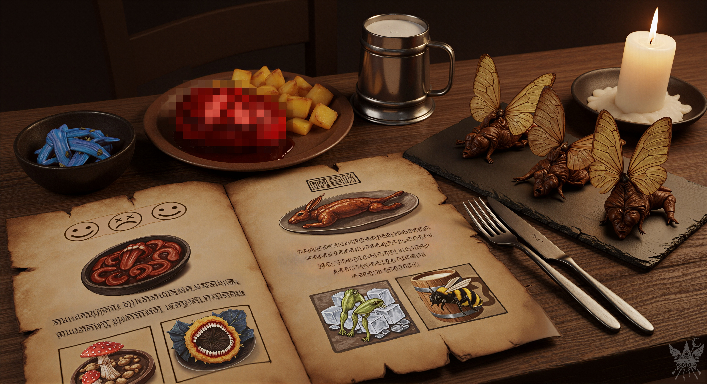
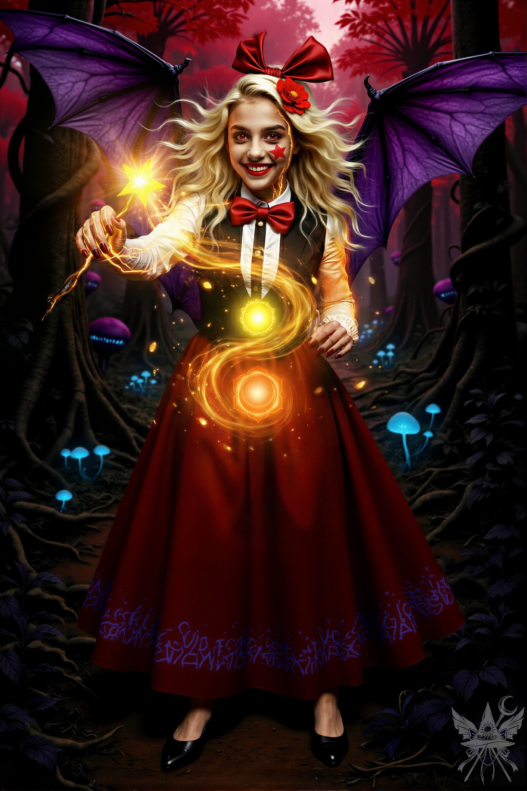
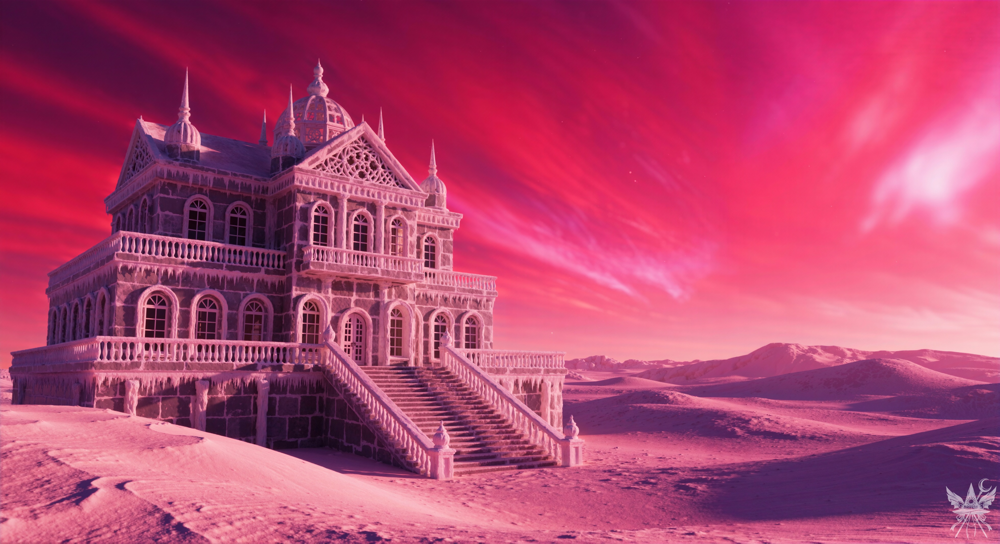
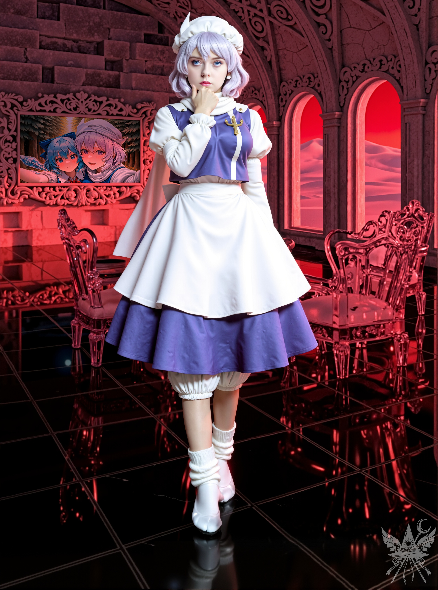

ウェイトレスに注文を伝える。
「ステーキを一つ。フライドポテトとビールも。それと……妖精の干物をお願い」
ウェイトレスが小さく会釈してカウンターへ戻っていくと、隣の席でエリスが目を丸くしていた。 「なかなかやるじゃない、あんた！ 人間はたいてい、あんなもの注文しないわ……」
言いながら、彼女はスナック菓子でも食べるような気軽さで、妖精の干物を半分かじり、ビールで流し込んだ。
（私が“普通”の人間だなんて、いつ言ったかしら）
内心で呟きつつ、メニューに視線を落とす。
「ねえ、エリス。『キリスト教徒の赤ん坊の血』ってノンアルコール飲料、悪趣味な名前よね。飲んだことある？」
「ちょ、まさか……それも試したいわけ？ メデっち……もしかして、人間じゃないんじゃないの？」
露骨な警戒心を隠そうともしない。
「どうしてそう思うの？」
「質問に質問で返すなんて……失礼じゃない？」
「実はね……」
少し間を置き、声を潜める。 「私が生まれた時……運命の女神が笑ったらしいの。だから、『キリスト教徒の赤ん坊の血』なんてありきたりなものじゃ物足りないわ。もっと刺激的なものが欲しいのよ」
「ふーん……。メデっちったら、魔界が気に入ったみたいね」
訝しげな視線が突き刺さる。
居酒屋の喧騒はさらに熱を帯びていた。 カウンターの奥では、酷く酔った悪魔たちが取っ組み合いの力比べを始めている。 一方が投げ飛ばされると、床に転がった男は怒り狂い、周囲に弾幕を乱射し始めた。 狙いは外れ、並んでいたエールの瓶が粉々に砕け散る。 即座に屈強な用心棒らしき悪魔たちが現れ、暴れる客を店外へ放り出した。 その一部始終を、エリスはクスクスと楽しそうに眺めている。
やがて、頼んだ料理がテーブルに並べられた。

香ばしく焼けた脂の匂いに、微かな鉄錆のような血の香りが混じる。蝋燭の頼りない光が、奇妙な盛り付けに深い影を落としていた。どこからどう見ても真っ当な食材とは思えない代物だが、この場ではそれが日常なのだろう。
ナイフを入れて一口運ぶと、想像に反して肉は柔らかく、子牛肉に近い食感の中に独特の甘みが広がった。
食事を終え、エリスに向き直る。 「ええ、魔界ってなかなか面白い世界ね。以前、悪魔の世界と関わったことがあるのだけれど、ここの住人とは少し毛色が違ったみたい。……例えば、バアルって知ってる？」
「バアル？ 聞いたことないわね。強いのかしら？」
「ええ、とても。バアルの魔力に触れてから、私はもう以前の私ではなくなったわ。人間の価値観なんて、本当にちっぽけなものだと痛感させられたのよ。他にも多くの悪魔を召喚してきたけれど」
「へぇ、召喚士だったわけ？ ちくしょー、召喚士なんて大っ嫌いだわ！」
エリスから悪戯っぽい笑みが消え、苛立ちが露わになる。 「メデっちに恨みはないけど……召喚士って奴らは、アタシたち悪魔をひどい目に遭わせることもあるのよ」
「ひどい目？」
「魔界はアストラル界の一部なのよ。閻魔様がそう決めたんだって。だから召喚士は、誰でもポータルを開いて、アタシたち悪魔を人間の世界に無理やり引きずり込めるわけ。一時的な契約のためとか言ってね。一時的ならまだマシだけど……」
「エリスも、そんな目に？」
「カオス様に感謝だわ。アタシは大丈夫だったんだけど、妹が連れて行かれちゃったのよ。唯一の家族……誰よりも大切な妹だったのに……。まだ子供だった頃の話……」
エリスはビールを飲み干し、空のジョッキを乱暴に叩きつけた。 鋭い視線が向けられる。 「あの時……召喚用のポータルを見たのよ。薄暗い図書館で……薄紫の服を着た、嫌な魔法使いがいたわ。あのクソ女が、妹を自分の世界に連れて行ったのよ！ アタシには何もできなかった……。それがどんな世界だったのかも、知らない……。ちくしょー！ 自分の体の一部を切り取られたような……そんな気持ち、分かる！？」
怒りに身を任せ、肩を激しく揺さぶってくる。
「わかるわ……。私も大切な人を失ったことがある」
真っ直ぐに見つめ返す。 「諦めないで。エリスなら、きっと妹を取り戻せるわ」
「もちろんよ！ アタシは弱い種族じゃないんだから！ 魔界は弱者を許さないのよ、覚えておきな！」
途端に表情が明るくなる。 感情の起伏が激しい相手だ。
残っていた妖精の干物を口に運ぶ。予想外に柔らかく、上質な乾燥肉のように口の中でとろけた。
「ねぇ、パンデモニウムを襲撃したいって言っていたわよね？でも、あの支配者とは仲良くしておきたいのよ。できるだけ揉め事には巻き込まれたくないしね」
肩をすくめてみせる。
「なーんだ、メデっちって八方美人なの？ つまんないわね」
エリスは皮肉めいた笑みを浮かべた。
「冗談でしょう？ 私は自分の目的のために動いているだけよ。無駄な争いは避けたいの。だから、神綺様は後回しにして、レティに集中するのはどう？」
エリスは再びジョッキを煽った。 「そう？ まあ、いいわ、レティでもいいけど……。でも、近づくには、先にルイズを堕ちたる神殿から助け出すんじゃなかったっけ？」
（今はあそこへ向かうべきではない。嫌な予感がする）
「ええ、でも今はそこに行くべきじゃない気がするの。直感だけれどね。だから、別の方法でレティが持っている宝石について探ってみるわ。まず、彼女について知っていること、何でも教えて」
腕を組んで考え込んだ後、ウェイトレスを呼んでビールを追加する。 一口喉を潤してから、口を開いた。 「フルネームはレティ・ホワイトロック。雪女よ。つまり、冬の妖怪ね。寒ければ寒いほど強くなるらしいわ。実際、氷雪世界からほとんど出ないの。ただ、真夏は40度近くまで気温が上がって雪原の一部が溶けちゃうから、その時は隣の幻想郷って世界へ行くみたい。そこは人間の世界とも繋がってるんだけど、別世界でもあるのよ」
「幻想郷のことは知っているわ。他に何かある？」
「まあ……あるにはあるけど……それを誰かに話しちゃったら、あんたを殺さなきゃなんないわ。いい？」
探るような笑みを浮かべる。
「誰にも言わないわ。話して」
エリスは身を乗り出し、声を潜めた。 「あいつ、“白”って呼ばれる麻薬を扱ってんの。雪の下でしか育たない珍しい花が材料だから、めったに手に入らない代物なのよ。もちろん、場所さえ分かれば話は別だけどね。大抵は闇市で売ってるんだけど……魔界の住人はほとんど悪魔だから、アタシたちには効き目薄いみたい。人間や妖怪の方がよく使うんだって。中毒性も強いみたいだし、儲けは大きいんだけど、商品は年に一度しか出回らないの。今はオフシーズンだから……」
（裏社会の流通か。利用価値はありそうね）
「どうしてそんなことを知っているか、なんて野暮なことは聞かないでおくわ。……で、宝石の話はどうなったの？」
「レティったら、去年の冬に手に入れた宝石を、ユキに見せびらかしてたんだって。何か魔法のアイテムらしいんだけど、詳しいことは知らないの。どんなものか見てみたいわね」
「そう。それで、レティはエリスのこと、どう思っているの？」
「実は昔、ちょっとやらかしちゃってね。レティに預かってた“白”を、つい全部一人で……使っちゃったのよ。それ以来、アタシのこと、すごい睨んでくるのよ」
（なるほど。だから私を矢面に立たせようとしたわけね）
「わかったわ。エリス、準備して。レティのところへ行くわよ」
椅子から立ち上がる。
「で、何かいい考えでもあるの？」
「もちろんよ」
ウェイトレスが近づき、小さな巻物をテーブルに置いた。 「450シンキになります」
「アタシのツケにしといて。明日、500シンキ返すから」
店を出ると、赤い空には魔界特有の刺すような日差しが照りつけていた。頭上を不気味な飛行船が横切っていく。 街の喧騒を抜けたところで、エリスが足をとめた。 「ねぇ、メデっち、飛ぶ練習する？ それとも、あの卵の道具を使う？」
「乗り物は持っているから、先に弾幕を教えて」
「いいわよ。確かに、戦闘魔法のほうが先ね。もう少し街から離れてからにしよう」
郊外の深い森へ足を踏み入れる。 湿った腐葉土の匂いと、暗がりに自生するキノコの青白い発光が、異界の雰囲気を色濃く漂わせていた。
開けた場所に出ると、エリスが振り返る。 「戦闘魔法なんて簡単よ。アタシたち悪魔にとっては生まれつきのもんだけど、人間は学ばなきゃいけないの。まあ、メデっちみたいな魔女なら、すぐにマスターできるわよ」
「具体的にどうすればいいの？」
「まず、あんたの体の中を魔力がパイプみたいに流れてるって想像して。頭から入って、足から地面に流れ出ていくのを、感じてみて。その逆もね」
「それはチャクラ[1]チャクラ：インドの伝統医学などにおいて、生命エネルギーが集中していると考えられている身体の部位。の基礎でしょう？ 知っているわ。もっと実践的なことを教えて」
「わかったわ。弾幕の色、強さ、特徴は全部、魔力を通すチャクラで決まるの。強くなれば、複数のチャクラを組み合わせて、もっとすごい弾幕を撃てるようになるわ。最初は、主要なチャクラだけを使った方が威力も上がるけど、他のチャクラも試してみるといいわね。例えば、あんたのチャクラと反対の性質を持つチャクラを使う相手には効果抜群よ！ 一つのチャクラを極めるには、そりゃもう大変だけど、全部極めれば、主要チャクラの力もさらにパワーアップするのよ」
エリスが杖を構えると、周囲の空気が熱を帯びた。

杖の先端から金色の光の粒子が溢れ出し、冷たい森の空気を温めていく。自信に満ちた魔力の発露。彼女は軽やかにステップを踏むようにして、琥珀色のエネルギー弾を数発、離れた木の幹へ撃ち込んだ。 焦げる匂いが漂う。
「見て、アタシの主要チャクラはスヴァディシュターナとマニプーラなのよ」
自身の下腹部とみぞおちを指差す。 「だから、魔力をそこへ通すと、弾幕はこんな色になるわけ。負のエネルギーは左手に、正のエネルギーは右手に集めて、杖でドッキングさせて活性化！って感じね。この杖が触媒になって、特定のチャクラの魔力を引き出すのよ。まあ、触媒なしでも撃てるけど……そこは人それぞれね。さあ、まずは一つのチャクラから始めてみて。うまくできるようになったら、二つ目も試していいわよ。頭頂のチャクラから正のエネルギーを、尾てい骨のチャクラから負のエネルギーを、選んだチャクラに集めて、両手に導いて、アタシに向かって撃ってみて！ どのチャクラを使うか、決めた？」
少し考え、喉のヴィシュッダ・チャクラに意識を集中させる。
最初は弱々しい光の揺らぎでしかなかったが、十数回繰り返すうちに、ようやく彼女が防壁で弾き返せるほどの威力が伴ってきた。 感覚を掴んだところで、地面に落ちていた枯れ枝を拾い集め、的に見立てて弾幕を放つ。 幾度かの試行で火がつき、小さな焚き火が出来上がった。
それを見届けた後、火を踏み消し、くすぶる灰を手に取って自身の顔やローブに無造作に擦り付ける。
「え？ なんでそんなことすんの？」
怪訝な顔をするエリスに、ニヤリと笑い返す。
「見てのお楽しみ」
（まだまだ実戦レベルとは言い難いけれど、基礎は理解したわ）
卵型のアーティファクトを取り出し、表面を撫でてスノーレーサーを実体化させる。
再び氷雪の地へ足を踏み入れる。毒々しい赤紫色の空と、吹き荒れる氷点下の風のコントラストが、この世界の歪さを物語っていた。冷気で肺が痛むが、次第に身体が適応していくのを感じる。

一面の銀世界の中に、圧倒的な静寂を纏った石造りの邸宅がそびえ立っていた。 ユキとマイのイグルーとは比べ物にならない、威圧的な造りだ。 スノーレーサーを降りて魔力を探ってみるが、何も感じ取れない。 分厚い壁が遮断しているのか、それとも別の理由があるのか。
卵をポケットにしまい、背後を振り返る。 「レティはエリスのことを嫌っているみたいだから、私一人で行くわ。エリスはここで様子を見ていて。戦闘になったら、助けに来てちょうだい。まあ、なんとかなるとは思うけれど……」
エリスは腕を組み、不満げに鼻を鳴らした。 「うーん……、メデっち、何を企んでんの？ なんだか嫌な予感がするわ〜。凍らされちゃったら、アタシは何もできないのよ……。まあ、いいわ、ここで隠れてる。どうせ、あんたはアタシに借金があるんだし。うふふ」
言うなり、雪の吹きだまりの陰へと姿を消した。
（さて、演技の時間ね）
わざと髪をぐしゃぐしゃに乱し、凍てつく扉を力強く叩く。
数十秒の沈黙の後、もう一度ノックする。 立っているだけで体温が奪われていく。
「誰だ？」
氷の壁越しに、低く冷たい声が響いた。
「この辺りの者じゃないんですけど……」
震える声を作って答える。
ゆっくりと扉が開き、冷気を纏った姿が現れた。 「あんた、誰？ 用件は？」
底冷えのする視線が突き刺さる。
「すみません、道に迷ってしまって……。ひどく冷えるので……、少しの間だけでも、中で暖をとらせていただけませんか？」
すがるようなトーンで懇願する。
相手はこちらの全身を舐め回すように観察し、鼻で笑った。 「人間……？ まさか、自分がどこにいるのか、わかってないんじゃないでしょうね？」
「はい……。今日、雪の中で目を覚ましたんです。何も覚えてなくて……。ここ……一体……？」
「ここは魔界よ。この世界の最強の冷気を操る、レティ・ホワイトロック様の前にいるのよ」
数秒の沈黙の後、彼女は不気味な薄笑いを浮かべた。 「……まあ、仕方ないわね。入りなさい」
邸宅の中は、外の刺すような風がない分だけマシだったが、依然として肺が凍りつくような清涼感に満ちていた。 鏡面のように磨き上げられた床の冷たさが、足元から這い上がってくる。
案内されたリビングには、透明な氷の彫刻のような家具が整然と配置されていた。 唯一の木製ベンチを顎でしゃくられ、そこに腰を下ろす。

向かいの氷の椅子に腰掛けたレティは、どこか底知れぬ余裕を纏っていた。 魔力を探ってみるが、微弱な反応が足元と、すぐ近くのどこかから感じられる程度だ。
「あら、暖めてあげられなくて悪いわね〜。ここはそういう場所なのよ。食べさせるものはないけど……お茶ならあるわ」
レティが奥の部屋へ消えた隙に、室内を観察する。 壁に飾られた額縁には、彼女と青い髪の妖精のような少女が親しげに寄り添う姿が描かれていた。 マイに似た雰囲気だが、もっと幼く無邪気な印象だ。
絵の下の壁に不自然なひび割れを見つけ、そっと額縁を持ち上げてみる。 小さな窪みがあった。
（……馬鹿みたい。こんな分かりやすい場所に隠すなんて）
視線を戻すと、部屋の中央に奇妙な氷のテーブル……コタツのような構造物があることに気づいた。 下を覗き込むと、床材に隠しハッチのような継ぎ目が見える。
（なるほど）
足音が近づき、慌てて姿勢を戻す。戻ってきたレティから、濃い緑茶の入ったカップを受け取った。 「どうぞ、温まりなさい。熱いお茶は……苦手かしら？」
「ありがとうございます。少し落ち着きました」
一口すすると、温かな液体が冷え切った内臓をゆっくりと解きほぐしていく。
「それで？ 本当に何も思い出せないの？ あんたの名前は？」
「ええと……。ぼんやりと……何かのイメージが……浮かぶんですけど……」
適当な嘘を並べ立てる。
「イメージ？ 面白いわねぇ。どんなイメージ？」
興味深そうに身を乗り出してくる。 甘い声色が、かえって不気味さを引き立てていた。
「なんか……はっきりとは……思い出せなくて……」
「それなら……記憶を鮮明にする“お薬”があるんだけど……。試してみる？ フフ……」
レティの口角が上がり、捕食者のような笑みが漏れる。
「薬……？ ちょっと……怖いですね……」
「あら、怖いの？ あんた、魔界に来るような子なのに？ それに……もう十分怖い目に遭ってるでしょう？」
カップをテーブルに置く音が、静寂な部屋に響く。 「それとも……もっとお茶？ 特別サービスしてあげる。私の淹れるお茶は……とびきり美味しいのよ〜。フフ……」
甘ったるい言葉とは裏腹に、肩に置かれた手のひらからは、逃げ場を塞ぐような絶対的な冷気が伝わってきた。
---
第１チャクラ：ムーラダーラ(会陰)、生命力、生存本能。色は赤。
第２チャクラ：スヴァディシュターナ(下腹部)、情熱、性的エネルギー。色はオレンジ。
第３チャクラ：マニプーラ(みぞおち)、意志、行動力。色は黄色。
第４チャクラ：アナーハタ(心臓)、愛、感情。色は緑。
第５チャクラ：ヴィシュッダ(喉)、コミュニケーション、自己表現。色は水色。
第６チャクラ：アージュニャー(眉間)、直感、洞察力。色は藍色(インディゴ)。
第７チャクラ：サハスラーラ(頭頂)、精神性、宇宙意識。色は白。
[SYSTEM ALERT: 音響兵器デプロイ完了]
▼ 本章の絶望を1000%味わうための専用聴覚データ ▼
■ YouTube：『Red Hat, Wicked Style （赤い帽子のウィキッド・スタイル）』